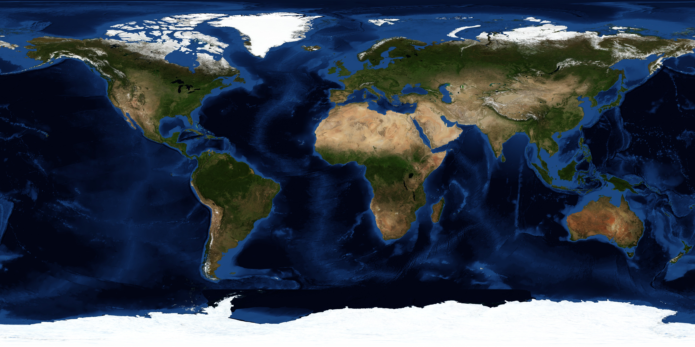

Public NASA, USGS and Copernicus services do not require a key. For optional Cesium terrain and OSM buildings, save a restricted public read-only token to this browser. Do not use a private write token.
Not connected.
Cesium access tokens ↗ · NASA Earthdata ↗